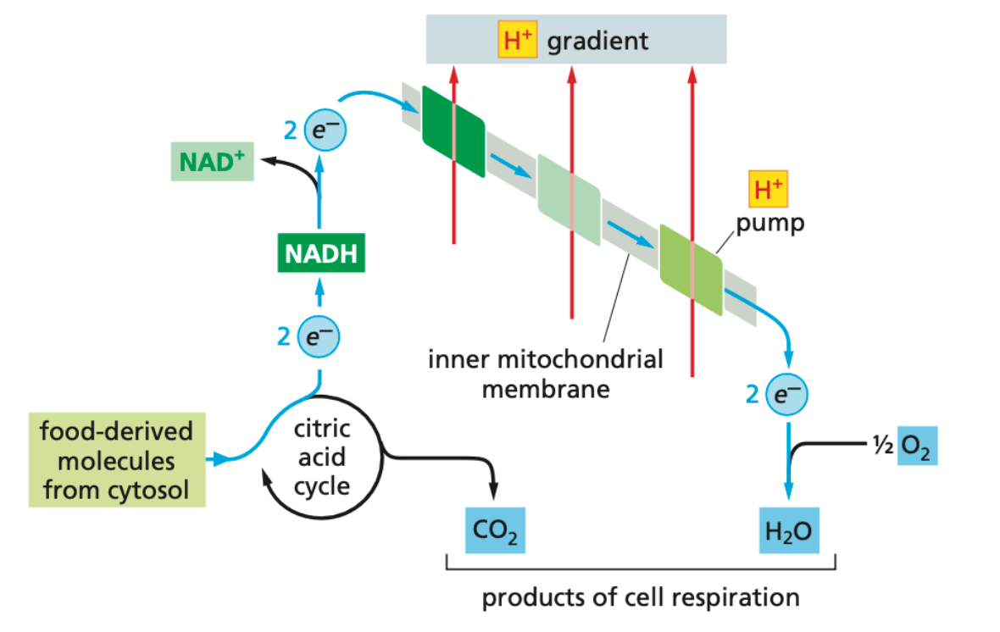
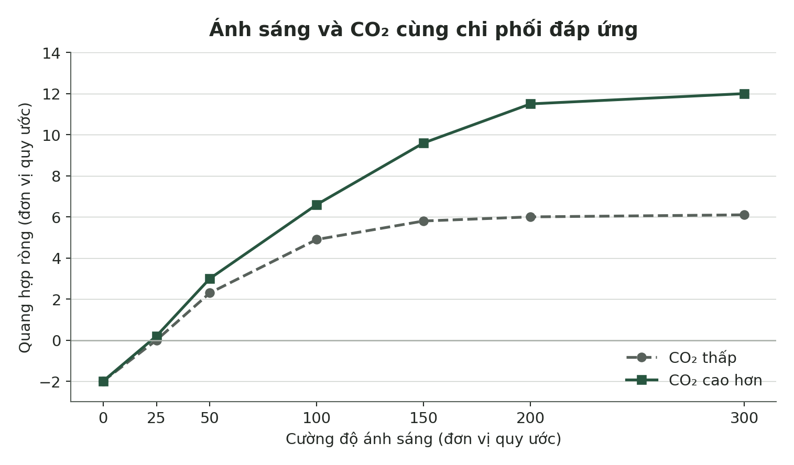

Chuyển hóa, hô hấp và quang hợp
C · Trao đổi chất và năng lượng · 9 trắc nghiệm và 1 tự luận
Bắt đầu học ↓Học buổi rút gọn · đọc hình và làm 10 câu · Học trọn chương và làm bộ 80 trắc nghiệm, 15 tự luận
Sau buổi này
- Tách vai trò của enzyme, ATP, chất mang electron và gradient proton.
- Dự đoán quan hệ giữa O₂, dòng electron, ATP và NAD⁺ trong hô hấp hoặc lên men.
- Nối phản ứng sáng, chu trình Calvin, quang hô hấp và thích nghi C4/CAM.
Gợi nhớ · 5 phút
Kẻ ba cột carbon, electron và năng lượng. Đặt CO₂, NADH, NADPH và ATP vào cột phù hợp với vai trò của chúng, rồi cho biết O₂ đứng ở đầu hay cuối mỗi sơ đồ đã học.
Đọc hình và nắm kiến thức · 20 phút
Quan sát hình minh họa

Sơ đồ tách nhánh electron, gradient H⁺ và các sản phẩm CO₂, H₂O.
Quan sát · Theo đường xanh từ NADH đến O₂. Sau đó tìm các mũi tên H⁺ và nhánh riêng dẫn đến CO₂.
Dự đoán · Nếu H⁺ có lối quay về chất nền qua một đường rò, việc tiêu thụ O₂ và tạo ATP có nhất thiết cùng giảm theo một tỷ lệ không?
Mở giải thích sau khi dự đoán
Electron còn có thể đến O₂ dù gradient H⁺ yếu đi. Proton đi vòng qua ATP synthase không đóng góp cùng mức vào tổng hợp ATP, do đó hai số đo có thể biến đổi khác nhau.
| Hệ | Nguồn electron và đích | Gradient H⁺ và ATP |
|---|---|---|
| Màng trong ty thể | NADH góp electron; O₂ nhận electron cuối chuỗi | H⁺ tích lũy ở khoang gian màng, chảy về chất nền qua ATP synthase |
| Màng thylakoid | Dòng thẳng lấy electron từ H₂O; NADP⁺ nhận electron | H⁺ tích lũy trong lòng thylakoid, chảy về stroma qua ATP synthase |
Tìm bên proton tích lũy và chiều proton qua ATP synthase. Tách chiều H⁺ ra khỏi chiều electron.
- Phản ứng sáng
Thylakoid tạo ATP và NADPH; oxy hóa H₂O giải phóng O₂.
- Cố định carbon
Rubisco gắn CO₂ vào RuBP; các bước sau dùng ATP và NADPH để tạo G3P.
- Tái sinh RuBP
Phần lớn G3P quay lại tái sinh chất nhận; một phần rời chu trình.
O₂ tách ra ở nhánh nước của phản ứng sáng. Carbon của G3P đi từ CO₂ qua Calvin.
Đọc hình để tự rút ra cơ chế
Quan sát · Trong mô hình ghép năng lượng, một ngăn có gradient H⁺ qua màng. Màng bắt đầu cho H⁺ đi tắt khỏi ATP synthase.
Dự đoán · Hãy tách hai dự đoán. Gradient H⁺ biến đổi ra sao và khả năng tổng hợp ATP qua ATP synthase thay đổi thế nào?
Mở giải thích sau khi dự đoán
H⁺ đi tắt làm gradient suy yếu. Với các điều kiện còn lại tương đương, động lực để ATP synthase tổng hợp ATP giảm. Lượng ATP đo được còn phụ thuộc cả tốc độ tiêu thụ.

Đường cong mô phỏng, giúp đọc tác động đồng thời của ánh sáng và CO₂ lên quang hợp ròng. Các trục dùng đơn vị quy ước.
Quan sát · Ở vùng sáng mạnh, đường CO₂ thấp gần nằm ngang và thấp hơn đường CO₂ cao hơn.
Dự đoán · Nếu chỉ tăng ánh sáng từ 200 lên 300 trong nhóm CO₂ thấp, đáp ứng sẽ đổi lớn hay nhỏ? So với việc đổi mức CO₂ tại cùng cường độ sáng.
Mở giải thích sau khi dự đoán
Mức tăng trong nhóm CO₂ thấp rất nhỏ. Tại cùng cường độ sáng 200, đường CO₂ cao hơn cho giá trị lớn hơn nhiều trong mô hình. Dữ liệu gợi ý CO₂ là yếu tố giới hạn đáng xem ở khoảng này, trong các điều kiện đã giữ giống nhau.
Enzyme và ghép năng lượng
Enzyme hạ năng lượng hoạt hóa, tăng tốc đạt cân bằng và giữ nguyên ΔG của phản ứng. Ghép một phản ứng cần năng lượng với thủy phân ATP có thể làm tổng quá trình thuận lợi về năng lượng.
Hô hấp và tái sinh NAD⁺
Đường phân tạo pyruvate, ATP và NADH. Ở điều kiện hiếu khí, chuỗi vận chuyển electron ty thể truyền electron về O₂ và xây gradient H⁺. H⁺ đi qua ATP synthase để hỗ trợ tổng hợp ATP. Trong ví dụ lên men ethanol, tái sinh NAD⁺ giúp đường phân tiếp tục. ATP của tuyến này được tạo ở đường phân.
Quang hợp và carbon
Ở thylakoid, quang hệ II lấy electron từ nước và giải phóng O₂. Dòng electron thẳng hỗ trợ tạo gradient H⁺ và NADPH. Trong stroma, chu trình Calvin dùng ATP và NADPH để đồng hóa CO₂, tạo G3P ròng và tái sinh chất nhận CO₂ RuBP.
Quang hô hấp và thích nghi
Khi CO₂ quanh Rubisco giảm tương đối so với O₂, hoạt tính oxygenase trở nên đáng kể hơn. C4 tập trung CO₂ bằng phân tách chủ yếu theo không gian. CAM phân tách thu CO₂ và sử dụng CO₂ chủ yếu theo thời gian ngày–đêm. Cả hai vẫn dùng chu trình Calvin.
Liên hệ thực tế
Trong một phép đo đồng thời O₂ và ATP ở ty thể, tiêu thụ O₂ có thể tiếp tục khi hiệu suất tạo ATP giảm nếu gradient H⁺ bị tiêu tán. Khi so sánh quang hợp ở lá, đo trao đổi khí vào các thời điểm khác nhau giúp phân biệt khả năng thu CO₂ ban đêm kiểu CAM với những chiến lược khác.
Tự kiểm · 25 phút
Đọc chuyển hóa của một mẫu mô lá
Một nhóm theo dõi các quá trình chuyển hóa của mẫu mô lá. Ở nhánh ty thể đã có đủ cơ chất và O₂; trạng thái can thiệp chỉ làm tăng rò H⁺ qua màng trong. Ở nhánh lá, nhóm quan sát riêng điều kiện sáng bình thường và nóng, khô. Các tác động trong câu hỏi là các tình huống mô phỏng độc lập.
| Điều kiện ở ty thể | Tiêu thụ O₂ tương đối | ATP tạo từ phosphoryl hóa oxy hóa |
|---|---|---|
| Đối chứng | Bình thường | Bình thường |
| Tăng rò H⁺ | Vẫn diễn ra | Giảm |
Đối chiếu và hẹn ôn · 10 phút
Chọn một chỗ còn phân vân. Giải thích lại bằng lời của mình rồi thử một câu cùng dạng.
Mở đáp án và giải thích · TB-04
Xem trong bộ bài tập của chủ đề
Học tiếp theo slide